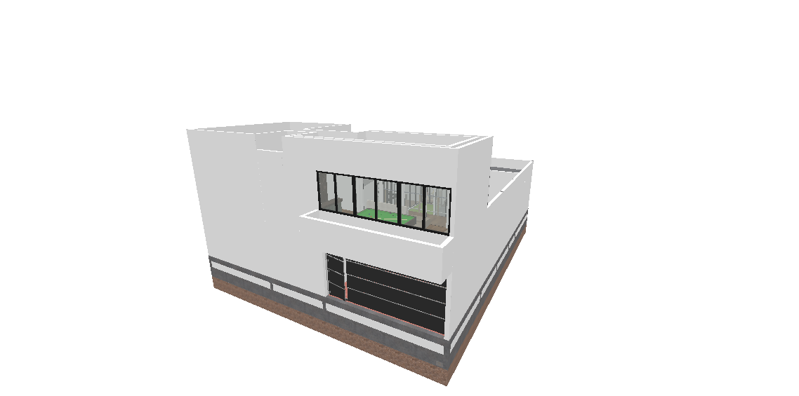

Desarrollo de proyectos ejecutivos y documentación técnica integral. Gestión avanzada de modelos en Archicad, optimización de combinaciones de capas para la supervisión de obra y extracción de cuantificaciones precisas. La centralización de la información permite anticipar resoluciones constructivas en sitio y ofrecer presentaciones claras y eficientes mediante BIMx.
Investigación enfocada en el estudio del aprovechamiento y gestión del agua pluvial para la vivienda en colonias populares de la ciudad de Querétaro. A través del análisis de la actual crisis hídrica del estado, en el cual se destaca la explotación y gestión de este recurso, exponiendo las dinámicas de desigualdad urbana junto con la carencia de infraestructura pluvial de la ciudad. Esta investigación propone estrategias de infraestructura urbana, habitacional sostenible y adaptable para mitigar el estrés hídrico a escala local.
Exploración morfológica y optimización geométrica mediante Rhinoceros y Grasshopper. El desarrollo de algoritmos visuales permite una mayor capacidad de iteraciones en el proceso de diseño para formas complejas o geometrías no convencionales. Esta metodología computacional facilita la integración de variables ambientales y paramétricas en tiempo real, logrando envolventes responsivas y reduciendo significativamente el desperdicio de material mediante la racionalización del panelizado de fachadas.
Conceptualización y desarrollo técnico de mobiliario. El proceso abarca desde la exploración espacial hasta la planimetría de la fabricación y el armado del mobiliario. Englobando la generación de despieces, tablas de corte y diagramas de ensamble. Se pone especial atención en la selección de los materiales, la solución de las uniones, los herrajes y el estudio ergonómico, asegurando piezas que conjugan durabilidad, limpieza visual y factibilidad productiva a nivel de taller.
Representación visual de proyectos y conceptos arquitectónicos mediante estrategias de renderización 3D, edición fotográfica e ilustración digital. Esto permite la exploración visual de los distintos elementos dentro del diseño y una mayor comprensión espacial. El flujo de trabajo incluye la cuidadosa configuración de texturas físicas, simulación de iluminación natural y postproducción para transmitir atmósferas precisas, convirtiéndose en el puente de comunicación definitivo entre la visión técnica y el cliente final.